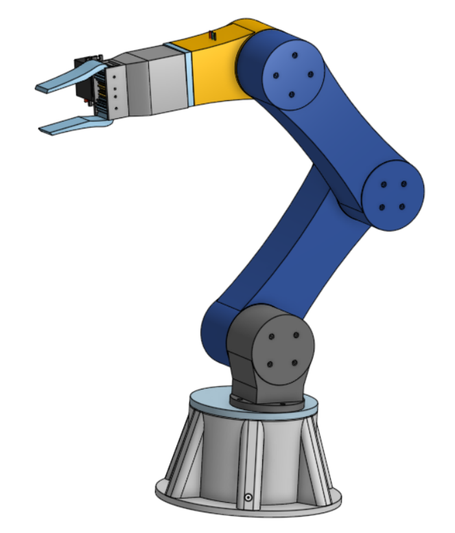
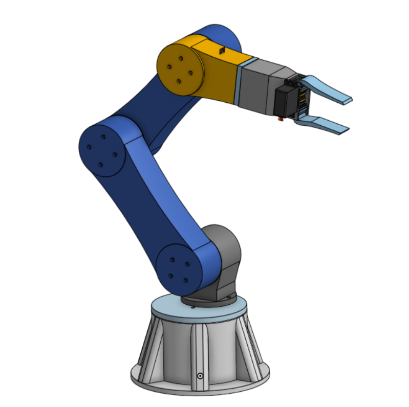
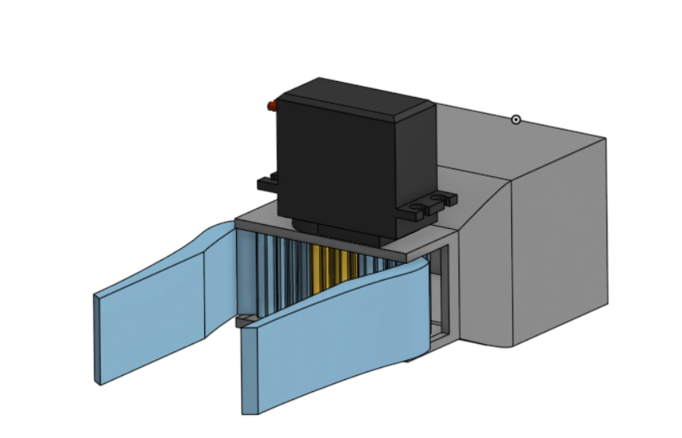

Mechanical design · In progress
5-DOF Robotic Arm
A custom-designed robotic manipulator with integrated stepper-driven joints, a 3D-printed structure, and an Arduino-based control architecture.


Overview
I designed and developed a five-degree-of-freedom robotic arm with custom mechanical components, stepper-driven joints, and an Arduino-based control architecture. The project began as a four-degree-of-freedom manipulator. After obtaining an additional stepper motor, I revised the mechanical architecture to accommodate a fifth independently controlled axis and expand the arm's positioning capabilities.
The arm uses a predominantly 3D-printed structure, custom joint assemblies, integrated planetary gearboxes, and a servo-actuated gripper.
Design development: from 4-DOF to 5-DOF
The initial mechanical architecture was designed around four independently controlled axes. I modified the layout and joint configuration to accommodate a fifth stepper motor while maintaining the overall assembly.
Mechanical design
I designed the complete robotic arm in Onshape, including its structural links, joint housings, motor mounts, and end-effector assembly. The mechanical structure is almost entirely 3D printed, with screws and heat-set threaded inserts used for fastening and assembly.
- Five independently controlled stepper-driven axes
- Custom-designed joint housings and structural links
- Rotating joints supported directly by 3D-printed components
- Integrated planetary gearboxes
- Servo-actuated gripper
Joint actuation
I integrated NEMA 17 stepper motors with custom planetary gearboxes to provide torque multiplication at the robotic joints. The gearbox design was physically assembled and successfully tested with a stepper motor. Detailed gearbox design, calculations, and testing are documented in the Custom Planetary Gearbox Project.
Gripper mechanism
I designed a custom two-finger gripper actuated by an MG996R servo motor. The mechanism uses a four-gear arrangement: two 8-tooth input gears directly mesh with opposing 15-tooth partial gears integrated into the gripper fingers.
Servo rotation transfers through the directly meshing gears, producing coordinated opening and closing motion of both fingers. Integrating the larger gear profiles into the gripper geometry eliminates the need for separate linkages between the transmission and gripping mechanism.
This integrated gear-and-finger design creates a compact actuation system that combines the transmission and end-effector structure into a single mechanical assembly.

Key design features:
- MG996R servo actuation
- Two 8-tooth input gears
- Two integrated 15-tooth partial gears
- Direct gear-to-gear engagement
- Custom-designed, 3D-printed gripping fingers
Electronics & control
Motor control architecture
The planned electronics architecture uses five NEMA 17 stepper motors, TMC2209 stepper drivers, and an Arduino Uno R3. Each motor is intended to operate as an independently controlled axis. Individual subsystem development is underway; complete five-motor integration is still in progress.
System integration
I used Cirkit Designer to develop and visualize the electronics layout before physical assembly, connecting the mechanical design with the planned motor-control architecture.
Robotic kinematics
I am currently implementing inverse kinematics to translate desired end-effector positions into individual joint angles. The objective is to coordinate movement across the five axes so the end effector can reach specified positions through calculated joint configurations.
Project status
The project has evolved from an initial four-axis concept into a five-axis robotic manipulator. The mechanical design has been developed in Onshape, and the planetary gearbox has been physically assembled and tested with a stepper motor. Current development is focused on completing the motor-control electronics, integrating all five stepper motors, and implementing inverse kinematics.